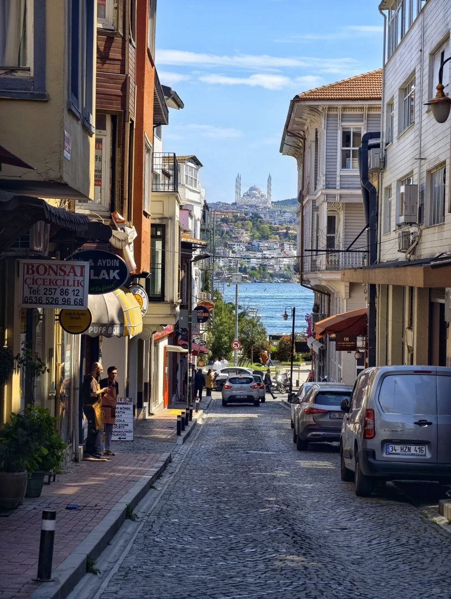
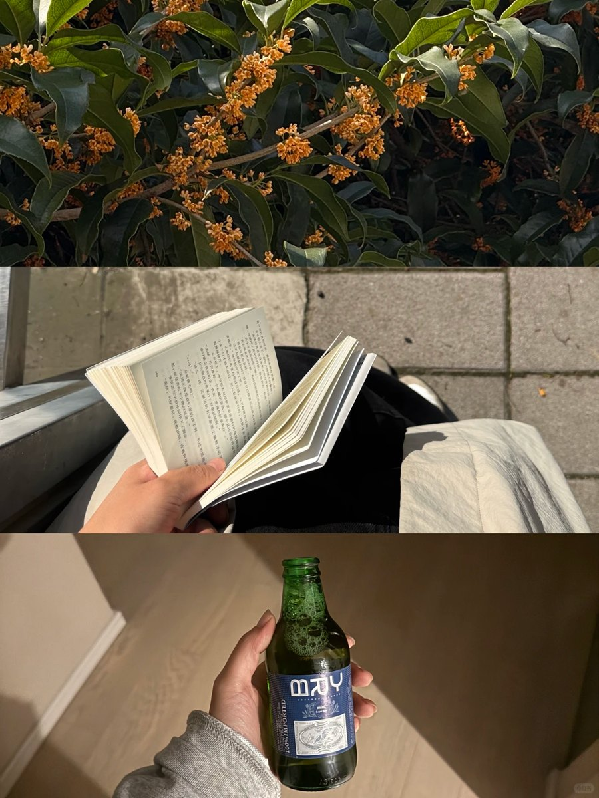
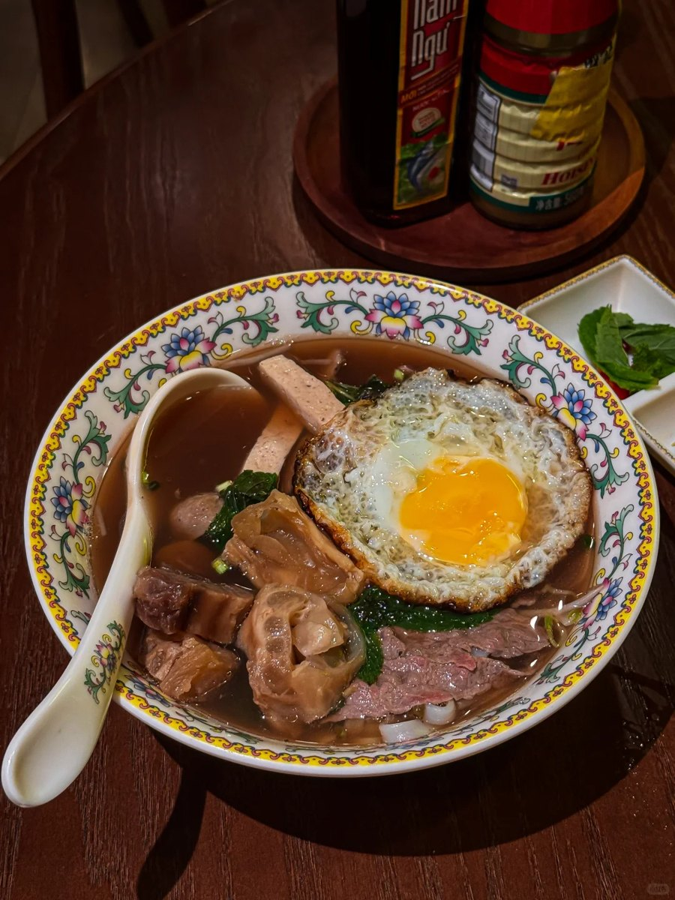
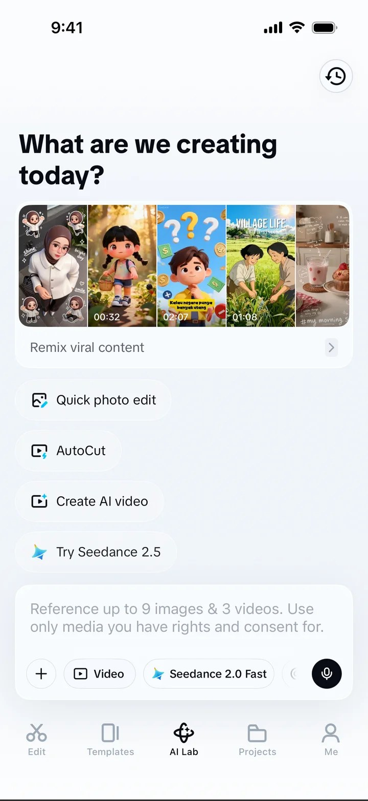
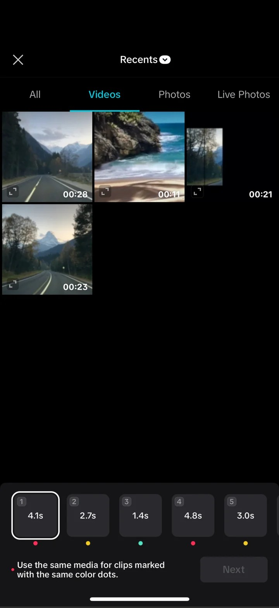
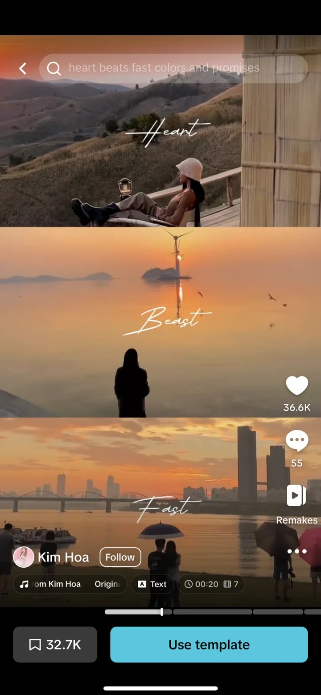
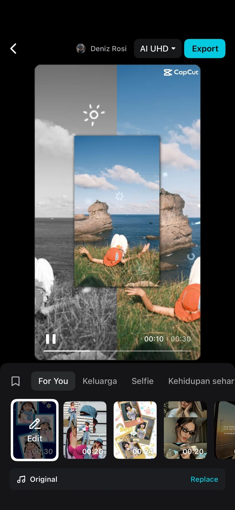
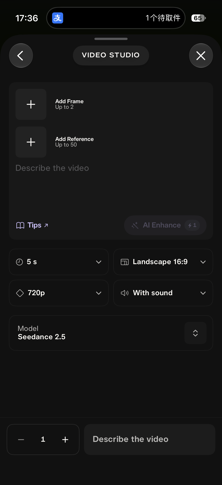
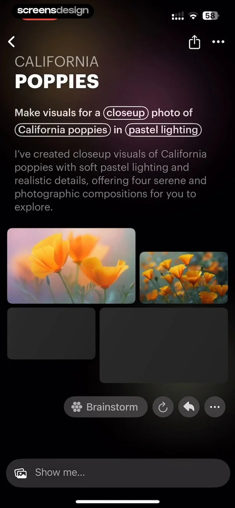
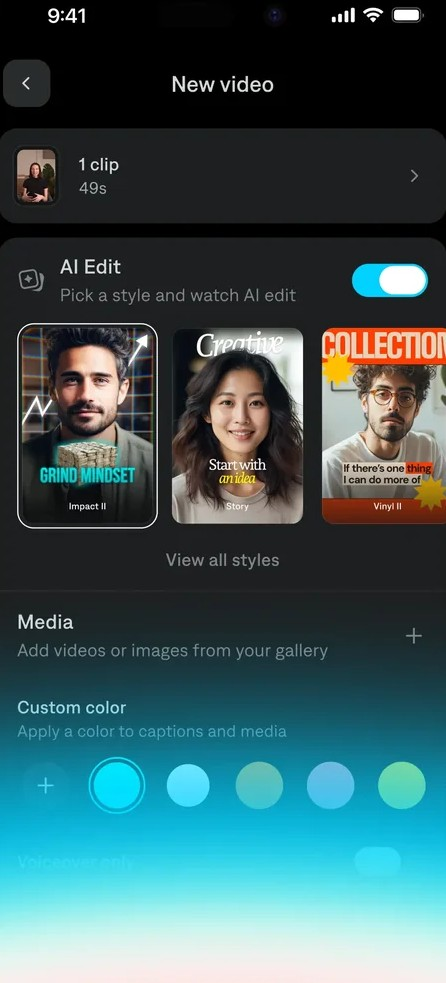

降低规划门槛
只有一个想法，也能逐步明确想拍什么，形成适合自己的创作方案。
用户不知道创作从哪里开始，也难以自行组织完整需求。

Video
3 4
5 6 7 8 Pick for me AutoCut01 · 需求分析
普通用户想在 AI Lab 做出一条质量不错的视频，却在起步、素材准备、拍摄和成片之间遇到断点。

需先有素材或明确需求模板需要素材，自然输入需要明确需求；想法模糊的用户仍不知如何开始。

相似素材缺少参考要求上传相似素材，却没有具体参考，用户不清楚该准备什么。

有成片，没有拍摄拆解能看到模板成片，却看不到镜头拍法和内容结构，用户仍不知如何拍出类似的视频。

缺少创作信息AutoCut 未采集足够的创作信息，难以按用户意图组织素材，成片质量受限。
现状截图：CapCut iOS，来自 Mobbin
现有能力各自停在流程中的某一个节点，用户无法独立走完整条路径。因此应由 AI 承担流程，用户只在关键节点做决策。
02 · 竞品调研
调研多款 AI 视频创作产品后，将交互方式归纳为表单式、对话式和模板式，并从每类中选取代表产品展开分析。
|
 描述画面，设置生成参数 |
 用对话描述画面 |
 选一个风格模板 |
|
|---|---|---|---|
| 服务对象 | 希望用文字或参考素材生成视频的创作者 | 艺术家、设计师、创作者和爱好者 | 本职不是剪视频的人 |
| 用户路径 |
|
|
|
| AI 介入环节 | 生成画面用户提供描述与参数 | 构思想法还模糊 | 剪辑素材已拍好 |
| 用户决策 | 画面描述、参考素材与生成参数 | 对话里的每一句 | 选风格 |
| 长处 | 参考素材与生成参数集中设置，用户可以直接调整生成条件。 | 门槛低，表达自由。 | 直观，第一次使用就能拿到完整成片。 |
| 局限 | 用户仍需自行组织画面描述；这一生成流程未提供真实拍摄与素材整理的连续引导。 | 用户仍需主动描述需求；想法模糊时，不知从何输入。 | 当前分析的 AI Edit 路径需要先提供拍摄素材。 |
截图来源：Pika 为用户提供的 App 截图；Luma、Captions 为 ScreensDesign。Pika 流程参考：官方 Video Studio 说明。
表单、对话和模板各有长处，帮助用户把想法变成视频，或将已有素材剪成片。但普通用户仍不清楚拍什么、怎么拍，以及如何完成整条创作流程。
03 · 设计目标与策略
面向缺少创作经验的普通用户，AI 主动获取信息、推进创作流程，用户只需在关键节点做决策。
只有一个想法，也能逐步明确想拍什么，形成适合自己的创作方案。
用户不知道创作从哪里开始，也难以自行组织完整需求。
无需掌握专业创作知识，也能看懂视频结构、预见成片效果，知道每个镜头该怎么拍。
专业创作信息难以理解，缺少可以直接跟随的拍摄参考。
每一步都有清楚的下一步，让参考、拍摄、素材整理与剪辑连续衔接，逐步完成自己的视频。
参考、拍摄与素材整理彼此割裂，需要用户自行衔接。